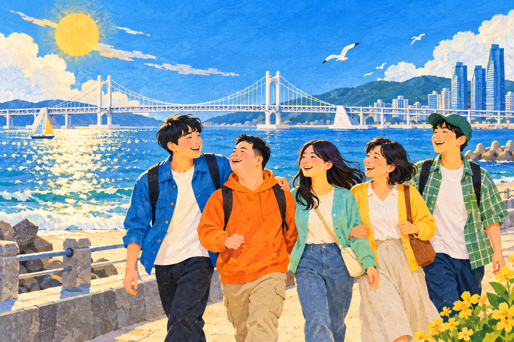

함께한다는 건앞서가는 대신,
앞서가는 대신,
곁에서 같이 걷는 것.
혼자서는 낯설었던 배움이 익숙해지고,
작은 경험이 내일의 자신감이 될 수 있도록.
나답게 배우고서로를 만나고내일을 준비합니다

부산 경계선지능인 지원사업
나의 속도로, 우리의 내일로.
조금 다른 속도도, 같은 가능성.
배움에서 일상까지, 부산이 함께 걷겠습니다.
혼자서는 낯설었던 배움이 익숙해지고,
작은 경험이 내일의 자신감이 될 수 있도록.
부산사회서비스원
사업 소개
더 넓은
지원의 연결
나에게 맞는
한걸음
이해를 넓히는
자료와 정보
우리의 이야기
함께 만드는
더 나은 내일